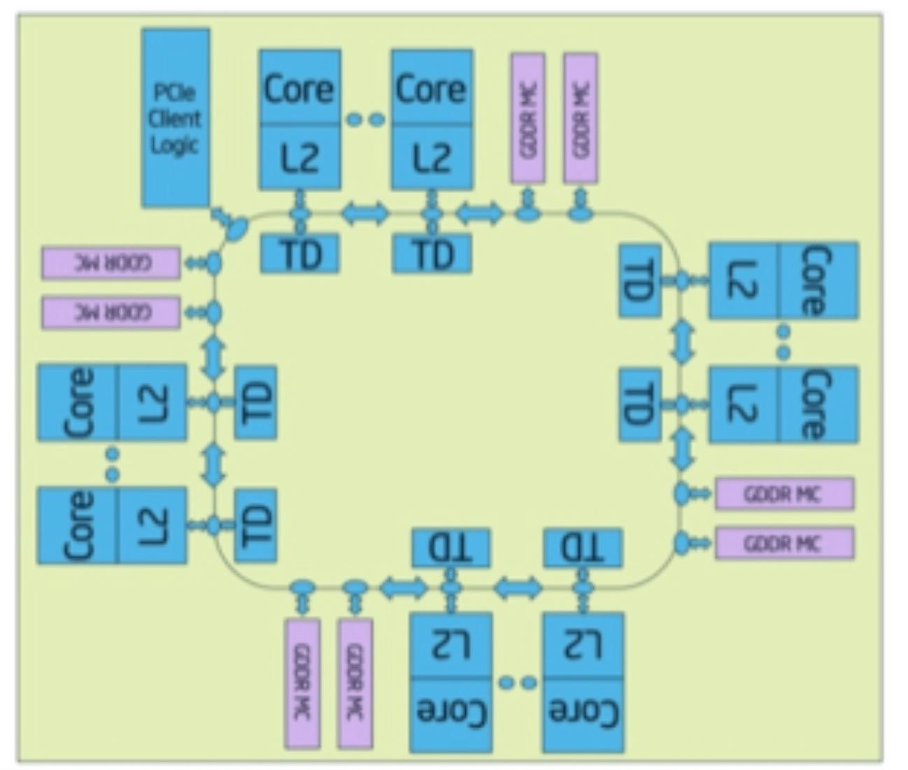
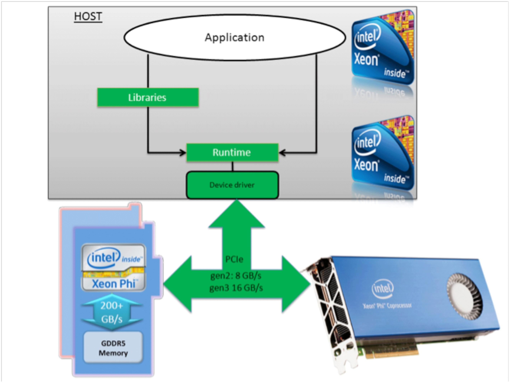

MODE-3 Coprocessor Lab-overview :
hyPACK-2013 : Mode-3 ( Coprocessors) Intel Xeon-Phi Coprocessor Architecture - An Overview
Understanding Intel's MIC architecture, Compiler & Vectorization features and programming
models for the Intel Xeon Phi coprocessor may enable programmers to achieve good performance
of their applications. The description of the hardware of the Intel Xeon Phi coprocessor
through information about the basic programming models may assist the developer to port the
applicaitons in an easy way.
The Intel Xeon-Phi Coprocessors can deliver over one teraflop of floating-point performance
and several paths as listed below can be taken to reach one tera-flop supercomputing speeds.
-
Offload work from the host processor to the Intel Xeon Phi coprocessor(s) using pragmas
to augment existing codes
-
Use coprocessor as a separate many-core Linux SMP compute node and recompiling source
code to run directly on coprocessor
-
Accessing the coprocessor as an accelerator through optimized libraries such as the
Intel MKL (Math Kernel Library) and use MKL thread affinity features
-
Use OpenMP framework on coprocessor with Compiler Vectorization features and expressing
sufficient parallelism with vector capability to achieve high floating-point performance
in the range of tera-flop supercomputing
The pragma-based offload model and using Intel Xeon Phi as an SMP processor is one of
the easiest approached to write a program similar to existing x86 systems. The challenge lies in
expressing sufficient parallelism and vector capability to achieve high floating-point performance,
as the Intel Xeon Phi coprocessors provide more than an order of magnitude increase in core
count over the current generation dual-core and quad-core processors.
The Xeon Phi Hardware Model from a Software Perspective
The Intel Xeon Phi KNC processor is a 60-core SMP chip where each core has a
dedicated 512-bit wide SSE (Streaming SIMD Extensions) vector unit. All the cores are
connected via a 512-bit bidirectional ring interconnect (Figure 1). Currently, the Phi
coprocessor is packaged as a separate PCIe device, external to the host processor.
Each Phi contains 8 GB of RAM that provides all the memory and file-system storage that
every user process, the Linux operating system, and ancillary daemon processes will use.
The Phi can mount an external host file-system, which should be used for all file-based
activity to conserve device memory for user applications. Even though Linux on Intel Xeon
Phi provides a conventional SMP virtual memory environment, the coprocessor cards do not
support paging to an external device.
The theoretical maximum bandwidth of the Intel Xeon Phi memory system is 352 GB/s
(5.5GTransfers/s * 16 channels * 4B/Transfer), but internal bandwidth limitations inside
the KNC chips (specifically the ring interconnect) plus the overhead of ECC memory limit
achievable performance to 200 GB/s or less.
Each Intel Xeon Phi core is based on a modified Pentium processor design that supports
hyperthreading and some new x86 instructions created for the wide vector unit.

Figure 1. Knight Corner Micro Architecture
The aggregate Intel Xeon Phi coprocessor computational performance is high, but each core is slow
and has limited floating-point performance when compared with modern mutli-core processor systems
such as Intel sandy bridge processor. Most importantly, the high performance can be achieved only
when a large number of parallel threads (minimum 120 to maximum 240) are utilized.
The parallel threads issue instructions to the wide vector units quickly enough to
keep the vector pipeline full. The current generation of coprocessor cores support up to four
concurrent threads of execution via hyperthreading.
The Intel Xeon Phi Compiler technology assists developers for implementation of vectorization in
data parallel codes. For data parallel codes, the complier recognizes the impendent chunks of
computation and issues the Intel Xeon Phi special wide vector instructions per core vector units.

Figure 2. Intel Xeon (host) and Intel Xeon Phi Coprocessor : PCIe and memory bandwidths.
Currently, the Xeon-Phi coprocessor is packaged as a separate PCIe device, external to the
host processor. The current PCIe packaging complicates the offload programming model
in which any thread can access any data in a shared memory system with some overheads.
To achieve the high offload computational performance with external coprocessors
requires that developers to do the following operations such as (1). Transfer the data across
the PCIe bus to the coprocessor and keep it there, (2). Give the coprocessor enough work to do
and (3) focus on data reuse within the coprocessor(s) to avoid memory bandwidth bottlenecks
and moving data back and forth to the host processor.
Topics dealing with all practical and experimental aspects of various
complier and vector features implemented in hyPACK-2013
are considered on Intel Xeon Phi Coprocessors in order to achieve the best sustained performance
of NLA and application Kernels.
The example programs are made available to the participants in the laboratory session.
The hyPACK-2013 programme is aimed to understand the practical aspects of
performance
enhancement through software multi-threading with Compiler and Vector technology features
of Intel Xeon-Phi coprocessors.
Participants will get an opportunity to walk-through and execute
some of the programs designed
for Mode-3 of this
workshop. The information
about porting codes and strategies how to analyze and improve the performance
of applications is discussed.
Mode-3 :
HPC Cluster with Intel Xeon Phi Coprocessors :
-
Write your own program for NLA kernel codes using auto-parallelisation
features on Xeon-Phi Coprocessors. Analyze the compiler generated optimization reports
for various problem sizes for typical matrix-matrix multiplication algorithms and obtain
maximum achievable performance
-
Write your own program for NLA kernel codes with or without use of Intel MKL
libraries, using Intel Compiler (loop optimization pragmas/directives) Automatic offload &
Compiler-Assisted Offload
-
Write your own software modules for NLA Kernels using compiler auto-parallelization
features of Intel Xeon-Phi and analyze the GAP generated optimization reports. Summarize the performance and scalability issues for various problems size of your code.
-
Write your own Matrix Multiply Code using OpenMP Pragmas based on OpenMP thread affinity on Intel Xeon
Phi Coprocessor.
-
Write your own Matrix Multiply Code using Intel MKL Thread Affinity on Intel Xeon-Phi Coprocessors
-
Write your own software modules for NLA kernels using various clauses
of SIMD Directives. Analyze the Vectorization reports and summarize performance issues
for different problems size.
-
Write your own suite of programs for NLA Kernels (Vector-Vector Addition,
Matrix-Matrix Addition), using
vector aligned data features of Intel Xeon-Phi using declspec(align(*)). Analyze Vectorization
reports & summarize the performance issues for different problems size of your code. You can use
SIMD Directives & IVDEP Directives /PRAGMAS to assist for VECTORIZATION
-
1.6. Obtain the performance for Vector into Vector Multiplication and Matrix into Matrix
Multiplication using Intel MKL Libraries on Intel XeonPhi Coprocessors & Automatic offload
& Compiler-Assisted Offload
-
Write your own software modules for NLA kernels using Intel MKL with (a) compiler
assisted offload (b) Reusing data that already exists in the memory of the coprocessor helps
to reduce transferring data for an example which illustrates how to perform multiple operations
on a single set of input matrices
-
Write your own program for NLA kernels with and without array operations using
vectorization features
-
Write your own program for Matrix-Matrix Multiplication based on Block-partitioning
of input matrices and use the Xeon-Phi Programming Environment features such as (a).
Allocated Persistent Storage on Co-Processor (b). Asynchronous data transfer from the
coprocessor to the processor (c). Double buffers inputs to an offload
-
Write your own program to perform large scale I/O operations and
quantify the overheads.
-
Write your own program to measure copy-memory bandwidth using openMP or Pthreads,
using 8/16/32 cores of Intel Xeon-Phi with different work-loads, and analyze the performance
-
Obtain Performance of Stream OpenMP benchmark on Intel Xeon-Phi and
compare the performance with the output of previous example using different programming paradigms.
-
Write your own program to measure latency, bandwidth and quantify overheads
using MPI point-to-point and Collective communications on Intel Xeon-Phi Coprocessors
in a Message Passing Cluster with different message sizes & analyze the performance
-
Write your own software modules for NLA (SGEMM/ DGEMM) kernels code using openMP
allocated memory on the heap aligned to 64 byte boundary & analyze the performance issues
& scalability issues (Use #pragma vector aligned #pragma ivdep\94 & posix_memalign\94 for
dynamic memory alignment)
-
Write your own program to analyze the CPU time, Xeon-Phi time, CPU-to-Xeon-Phi Data
transfer time and Xeon-Phi-CPU data transfer time and quantify the time taken for
different problem sizes with respect to the number of OpenMP threads used and understand
data transfers over the PCIe bus from the host to the accelerator and vice versa
-
Write your own codes for NLA kernels & PDE Solver using MPI-OpenMP (with Collapse and
without Collapse) and Loop un-rolling (nested loops) with Vectorization (ivdep and
vector aligned) (use OpenMP supported four different kinds of loop scheduling.
-
Write your own program for implementation of PDE solver using
Finite Difference Method (FDM) using OpenMP and MPI. The computations are performed
on host and the Coprocessors
-
Write your own program for implementation of PDE solver using Finite Element Method (FEM) in
two-dimensional regions using MPI OpenMP in which the computations are performed on host
and the Coprocessor. Use features such as Overlap Computation and communication - Asynchronous
Transfer & Double Buffering
-
Write your own program for NLA Kernels and an implementation of PDE solver by FDM
in 2D regions using MPI OpenMP in which the computations are performed using
MIC_KMP_AFFINITY=verbose, granularity = fine, scatter, compact, and gather
-
Write your own program for NLA Kernels and an implementation of PDE solver by FDM
in 2D regions using Performance of Tuning OpenMP codes on
Xeon-Phi Modifying Stack Size.
-
Write your own program for implementation of PDE solver using
Finite Difference Method (FDM) using MPI & OpenMP, combination of MPI OpenMP.
The software module should use larger 2MB pages. The importance of larger pages for
floating-point dominated FDM application is required as it performs array operation the
computations on host and the Coprocessor
|